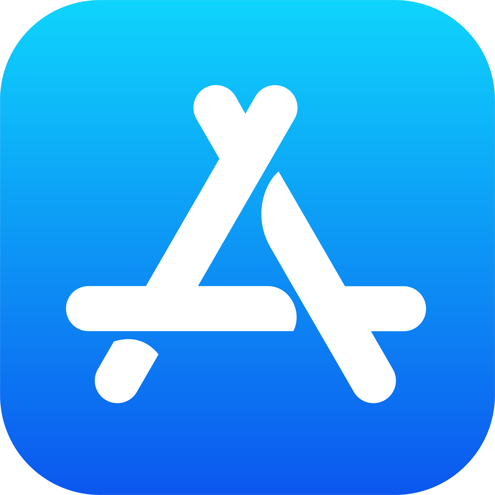
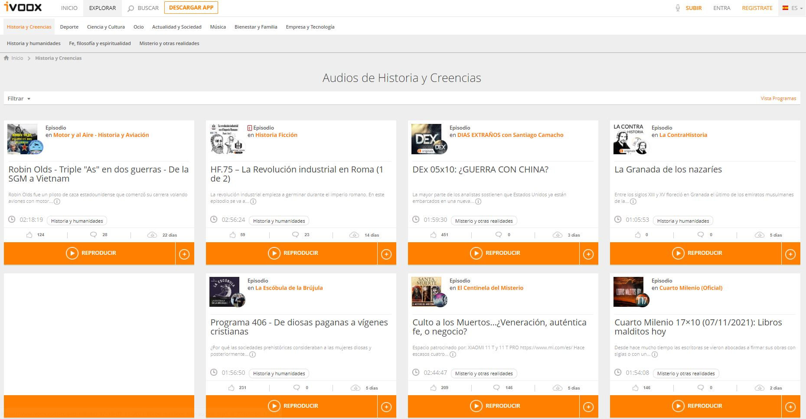

Ivoox
https://www.ivoox.com
Versió 2.283
-

Funcionalitats
Plataforma de podcast feta a Barcelona amb molta varietat de temes: història, esports, ciència, música, audiollibres... Interfície senzilla pero funcional. Té també suggerències personalitzades a nivell usuari.
Els usuaris es poden subscriure al teu podcast i pots rebre una quantitat de diners, que varia segons els oients.

Finançament
Finançament per part de l'empresa Grup Intercom l'any 2008. La quantitat és desconeguda.
Companyia
Propietat de l'actual director, i creador de la plataforma, Juan Ignacio Solera.
Alternatives
Spotify, Podium Podcast, Castbox...
Avantantges
Ofereix escoltar ràdios en directe, podcasts en diferents idiomes, emmagatzematge il·limitat i reconeixement de programes amb premis.
Inconvenients
Gran quantitat d'anuncis en la versió gratuïta i interfície bastant millorable.